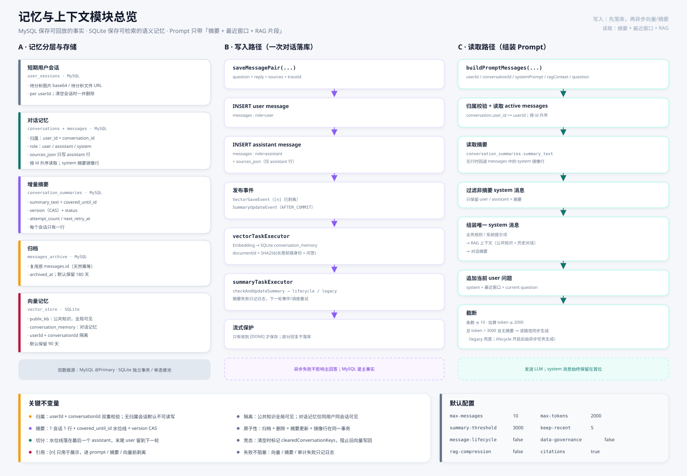
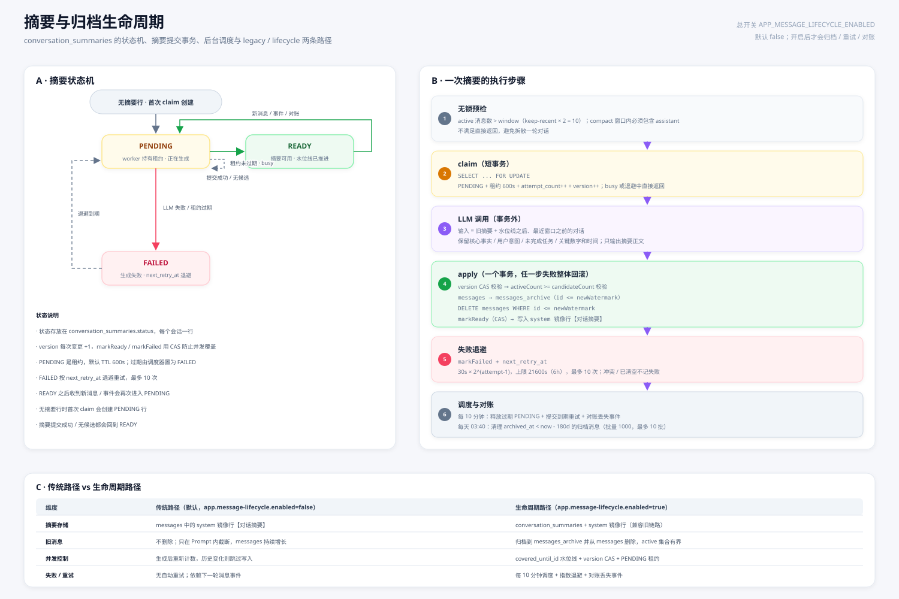

MySQL 保存「可回放的事实」，SQLite 保存「可检索的语义记忆」，Prompt 只带「摘要 + 最近窗口 + RAG 片段」。 这张页面把写入、读取、摘要、归档、引用与保留策略串成一条线。
左边是五种记忆与存储；中间是一轮对话的落库与异步事件；右边是 Prompt 的读取、摘要加载与截断。

READY / PENDING / FAILED 状态机、claim 租约、事务外 LLM、事务内归档/删除/CAS、失败退避与每 10 分钟对账。

app.message-lifecycle.enabled=false 时，摘要会写 system 镜像行，但旧 messages 不会归档/删除；
app.data-governance.enabled=false 时，90 天对话向量保留与日志清理也不会执行。两个开关互相独立。
生命周期关闭时，长会话的 active 消息会持续增长，且读路径在缺少摘要时可能同步调用 LLM 生成滚动摘要。